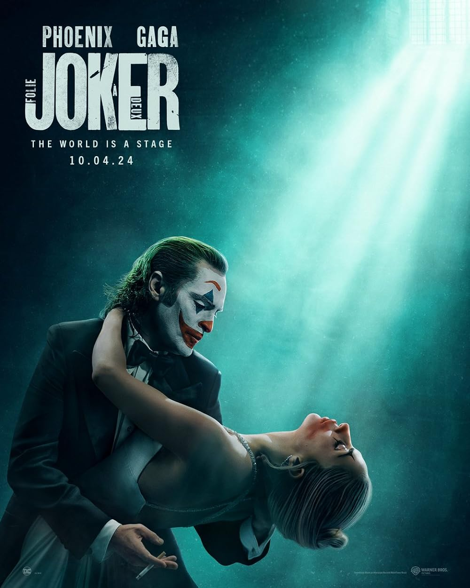

Lançamento
3 DE OUTUBRO DE 2024
Sinopse
Em Coringa 2, acompanhamos a sequência do longa sobre Arthur Fleck (Joaquin Phoenix),
que trabalhava como palhaço para uma agência de talentos e precisou lidar desde sempre com seus problemas
mentais.
Vindo de uma origem familiar complicada, sua personalidade nada convencional o fez ser demitido do emprego,
e, numa reação a essa e tantas outras infelicidades em sua vida,
ele assumiu uma postura violenta - e se tornou o Coringa.
A continuação se passa depois dos acontecimentos do filme de 2019, após ser iniciado um movimento popular
contra a elite de Gotham City,
revolução esta, que teve o Coringa como seu maior representante.Confira a classificação indicativa no Portal
Online da Cultura Digital.